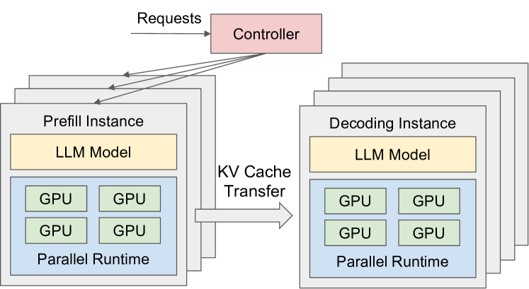

请求到达
PD 分离与大规模专家并行部署
一次 LLM 推理分为 Prefill（首 token 前的上下文计算）和 Decode（逐 token 生成）两阶段。它们一个吃算力、一个吃带宽，混在同一批 GPU 上会互相拖累。PD 分离把两者拆到不同 GPU 池各自优化；再叠加专家并行（EP）与 EPLB 负载均衡，让 DeepSeek-V3 这类千亿 MoE 模型能以极低单 token 成本对外服务。
一图看懂
把 LLM 推理想象成餐厅出菜：Prefill 是「备料」——一次性把整桌菜单的食材切好算清楚，吃算力；Decode 是「上菜」——一道一道端出来，吃的是搬运效率（访存带宽）。传统部署像让一个厨师既备料又上菜，两边互相打断。PD 分离则是把备料厨师和上菜服务员分开，各自按自己的节奏排班，中间用传菜窗口（KV Cache 传输）衔接。
- Prefill GPU 池算力密集型优化 TTFT生成 KV Cache
- KV Cache 传输RDMA 跨节点
- Decode GPU 池访存密集型优化 TPOT
- 逐 token 输出
为什么 Prefill 和 Decode 要分开
要理解 PD 分离的价值，先看清两个阶段的资源画像差异——它们对硬件的需求几乎完全相反。
| 维度 | Prefill 阶段 | Decode 阶段 |
|---|---|---|
| 做什么 | 一次性处理整条 prompt，算出 KV Cache | 逐 token 生成，每步只算新 token 的 Q/K/V |
| 计算特征 | 算力密集（compute-bound） | 访存密集（memory-bound） |
| 瓶颈指标 | TTFT（首 token 延迟） | TPOT（每 token 延迟） |
| 并行度 | 高（prompt 内所有 token 可并行算注意力） | 低（每步只算 1 个 token） |
| GPU 利用率 | 高（算力被充分利用） | 低（算力闲置，卡在搬权重） |
常见误区
很多人以为「Prefill 和 Decode 都在跑同一个模型，放一起不是更省显存吗？」问题在于它们混在同一批 GPU 上会互相干扰：一个长 prompt 的 Prefill 突然占满算力，正在 Decode 的请求就被拖慢，TPOT 飙升；反过来一批 Decode 请求占满显存带宽，新请求的 TTFT 也被拉长。这就是 Prefill-Decode 干扰。
请求在 PD 分离下的完整生命周期
把一次请求在分离架构里的流转画成状态机，能更直观地看到「KV 传输」这个在传统部署里不存在的新环节，以及它带来的新失败模式：
stateDiagram-v2
[*] --> Queued: 请求到达
Queued --> Prefill: 调度到 Prefill 池
Prefill --> Transfer: KV 算完
写入缓存池 Transfer --> Decode: KV 跨池传输
到 Decode 池 Decode --> Decode: 逐 token 生成 Decode --> [*]: 正常完成 Decode --> Reject: 过载
早期拒绝 Transfer --> Reject: KV 传输超时 Queued --> Reject: 队列过长 Reject --> [*]: 返回降级响应
写入缓存池 Transfer --> Decode: KV 跨池传输
到 Decode 池 Decode --> Decode: 逐 token 生成 Decode --> [*]: 正常完成 Decode --> Reject: 过载
早期拒绝 Transfer --> Reject: KV 传输超时 Queued --> Reject: 队列过长 Reject --> [*]: 返回降级响应
这张状态图揭示了 PD 分离相对混合部署的代价边界：传统部署里请求只有「排队→计算→完成」一条路径；分离后增加了 KV 跨池传输，于是多出了传输超时、缓存未命中需重算、过载拒绝等分支。这些分支必须被调度器显式处理——否则一个 Decode 节点在等 KV 传输时，整批请求都会卡住。所以分离架构对调度器和缓存亲和的要求比混合部署高得多。
混合批处理的问题
传统做法（如 vLLM 早期的连续批处理）把 Prefill 和 Decode 混在一个 batch 里调度。看似 GPU 利用率高了，但代价是：
- TTFT 和 TPOT 耦合：要同时满足两个延迟指标，只能过度配置算力，导致成本浪费。
- 资源分配只能取折中：Prefill 需要高算力配比，Decode 需要高带宽配比，混在一起谁都满足不了最优。
分块 Prefill（chunked prefill / dynamic splitfuse）试图缓解这个问题——把长 prompt 切成小块和 Decode 混批，但本质上仍无法彻底隔离两阶段的干扰。
PD 分离部署
DistServe（arXiv:2401.09670, OSDI 2024）给出了彻底的方案：把 Prefill 和 Decode 分配到不同的 GPU，各自独立优化。
下面这张是 DistServe 论文里的系统架构原图——它是「PD 分离」这个理念第一次被完整画成生产系统的样子，读懂它，就基本读懂了今天所有分离式推理服务的骨架。

逐块读这张架构图，按数据流的顺序看。第一，最左边的请求调度器（Dispatcher）是整个系统的入口，它负责两件事：决定新请求去哪个 Prefill 节点（依据各节点当前负载），以及决定 Prefill 算完的 KV 送去哪个 Decode 节点（依据 KV 传输距离与缓存状态）——这就是「调度器从单层变两层」的关键设计。第二，中间的 Prefill 工作节点池：每个节点处理完整 prompt、算出 KV Cache，然后立刻把 KV 传给 Decode 节点——注意图中 Prefill 节点不保留 KV，算完即走，这是它区别于混合部署的核心：算力密集的节点不需要为「存储」负责。第三，右边的 Decode 工作节点池：接收 KV 后逐 token 生成，并把新产生的 KV 追加到自己维护的缓存上；图里还画了 KV 在 Decode 节点之间按需流动的链路，对应「同一会话的后续轮次可能被路由到不同 Decode 节点」的现实。
这张图最值得新手记住的一个细节是：图中没有「一个请求从头到尾只走一条线」的路径。请求的生命周期被拆成了「调度 → Prefill → 传 KV → Decode」四个环节，每个环节都可能发生在不同的物理节点上。这意味着系统里的「状态」不再绑定在某一个 GPU 上，而是跟着 KV Cache 走——这正是 PD 分离架构与生俱来的灵活性，也是它相对混合部署复杂的根源：多出来的 KV 传输环节，需要调度器、网络、缓存三层的协同才能不成为瓶颈。理解这条数据流，后面所有小节（Mooncake、KV 传输账、容量规划）都在给这条流上补细节。
- GPU 池Prefill 和 Decode 混批Prefill 池高算力配比优化 TTFT
- TTFT 与 TPOT 耦合需过度配置资源
- GPU 池 / Prefill 和 Decode 混批
Decode 池高带宽配比优化 TPOT- Prefill 池 / 高算力配比 / 优化 TTFTKV Cache 跨池传输
- PD 分离部署
- TTFT 与 TPOT 耦合 / 需过度配置资源对比
分离带来的收益
分离后，每个阶段可以量身定制并行策略和资源配比：
- Prefill 池：用张量并行（TP）把大 prompt 的计算拆到多 GPU，追求高算力利用率，压低 TTFT。
- Decode 池：用更大的 batch 和流水线并行，追求高访存吞吐，压低 TPOT。
DistServe 的评估显示，相比当时最优的混合系统，分离部署能在满足同样 SLO 的前提下多服务 7.4 倍的请求，或承受12.6 倍更紧的 SLO，同时保持 90% 以上请求满足延迟要求。
新手最容易搞错
看到「多服务 7.4 倍请求」这个数字，新手最容易得出「PD 分离 = 免费翻好几倍」的结论。这个 7.4 倍是在「满足同样 SLO」的前提下算出来的，它不等于任何场景都能翻 7.4 倍。三个前提缺一不可：一是请求长度方差要大（长 prompt 与短请求混在一起，混合部署才吃亏严重；如果所有请求长度接近，分离收益大幅缩水）；二是流量规模要够大（几张小卡上分离，KV 传输和调度开销反而拖后腿）；三是SLO 要够紧（如果用户根本不在乎 TPOT，混合部署的干扰也无所谓）。所以正确的读法是：7.4 倍是「分离架构消除干扰后的上限收益」，你的实际收益要用自己的流量在两种部署下各测一遍才知道——分离是「消除一个既有问题」，不是「凭空变快」。
核心挑战：KV Cache 跨池传输
分离的代价是 Prefill 阶段算出的 KV Cache 需要跨 GPU 池传输到 Decode 池。KV Cache 的体积不小——详见 KV Cache 原理与优化，长上下文下缓存甚至比模型权重还大。因此：
- 两个池的 GPU 要按集群带宽就近放置，优先同节点、同机架，最小化传输延迟。
- 用 RDMA 等高带宽互联技术加速 KV Cache 的跨节点搬运。
- 调度器要缓存感知——尽量把同一用户的后续请求路由到已持有其 KV Cache 的 Decode 节点。
什么时候值得做 PD 分离
PD 分离不是银弹。它带来的收益（TTFT/TPOT 解耦、按阶段独立扩缩容）在流量大、请求长度方差高、对延迟敏感的场景才划算；中小流量或只有一两张卡的服务，分离带来的 KV 传输开销和调度复杂度反而可能让整体更慢。一个粗略判断：当单实例的混合批处理已经开始出现「长 prompt 拖慢短请求」的 SLO 违约时，才是考虑分离的时机。分块 Prefill（chunked prefill）往往是更轻量的第一步。
Mooncake：KVCache 为中心的分离架构
Mooncake（arXiv:2407.00079, FAST 2025 最佳论文）是 Kimi（月之暗面）的线上推理平台，把 PD 分离做到了生产规模。它的核心设计是以 KVCache 为中心而非以模型为中心。
三级分离设计
Prefill 集群
专门处理首 token 计算，高算力配置。
Decode 集群
专门做逐 token 生成，高带宽配置。
分级 KVCache 缓存
利用 GPU 集群中闲置的 CPU、DRAM、SSD 资源构建分离式缓存，跨请求复用 KV Cache。
这个分级缓存是 Mooncake 的关键创新——它不把 KV Cache 只存在 GPU 显存里，而是溢出到 CPU 内存和 SSD，用「以存换算」的思路把昂贵的 HBM 留给当前活跃请求，冷数据下沉到更便宜的介质。需要时再按需取回，配合缓存感知调度提高命中率。
过载场景与早期拒绝
传统服务系统假设所有请求都会被处理，但 Kimi 面临流量远超容量的真实场景。Mooncake 设计了预测式早期拒绝策略：
- 根据系统当前负载预测，提前拒绝无法在 SLO 内完成的请求，避免浪费算力在注定超时的请求上。
- 配合未来负载预测，缓解直接拒绝带来的负载波动问题。
实验显示 Mooncake 在长上下文场景中相比基线可达 525% 的吞吐量提升，在真实工作负载下让 Kimi 多承载了 75% 的请求。
专家并行 EP 与 EPLB 负载均衡
MoE 模型（见 MoE 混合专家）在大规模部署时，专家并行（Expert Parallelism, EP）是压低单 token 成本的关键——它把不同的专家分布到不同 GPU 上，让每个 GPU 只需驻留一部分专家权重。
专家并行 EP 的工作方式
在 EP 下，每个 token 的路由器选出的 Top-K 专家可能分布在不同 GPU 上，因此需要一个 all-to-all 通信步骤把 token 发到对应专家所在的 GPU，算完再发回来：
sequenceDiagram
participant G1 as GPU 1
专家 A B participant G2 as GPU 2
专家 C D participant G3 as GPU 3
专家 E F G1->>G2: Dispatch: token 需要 GPU2 上的专家 C G1->>G3: Dispatch: token 需要 GPU3 上的专家 E G2->>G1: Expert C 计算完，返回结果 G3->>G1: Expert E 计算完，返回结果 Note over G1: 加权求和，输出
专家 A B participant G2 as GPU 2
专家 C D participant G3 as GPU 3
专家 E F G1->>G2: Dispatch: token 需要 GPU2 上的专家 C G1->>G3: Dispatch: token 需要 GPU3 上的专家 E G2->>G1: Expert C 计算完，返回结果 G3->>G1: Expert E 计算完，返回结果 Note over G1: 加权求和，输出
DeepSeek-V3 的线上部署配置体现了 Prefill 和 Decode 对 EP 的不同需求：
| 阶段 | EP 并行度 | TP 并行度 | 特点 |
|---|---|---|---|
| Prefill | EP32 | TP1 | 用两个微批重叠计算和 all-to-all 通信 |
| Decode | EP128 | TP1 | 用更大的 EP 把专家拆得更散；all-to-all 通信不占用 GPU SM |
Decode 阶段用 EP128（远大于 Prefill 的 EP32）是因为 Decode 每步只算 1 个 token、算力需求极小，可以把专家拆到更多 GPU 上，让每个 GPU 驻留更少的专家权重——用更多但更小的显存足迹换取更低的单 token 成本。而且 Decode 的 all-to-all 通信量小（每步只传几个 token），通信不占用 GPU 计算单元（SM），可以和计算重叠。
EPLB：专家并行负载均衡器
EP 的头号难题是专家负载不均：不同专家被选中的频率差异很大（热门专家被反复调用，冷门专家闲置），导致 GPU 间负载不均、部分 GPU 成为瓶颈。DeepSeek 开源了 EPLB（Expert Parallelism Load Balancer）来解决这个问题。
EPLB 的核心策略是冗余专家：
- 复制重载专家：对负载最高的专家进行复制（冗余部署），让多个 GPU 上都有同一专家的副本，分摊流量。
- 启发式打包：把复制后的专家智能地分配到各 GPU 上，确保不同 GPU 间负载均衡。
- 组内亲和放置：得益于 DeepSeek-V3 的组限制专家路由（同组专家倾向于被同时选中），把同组专家放在同一节点上，减少跨节点数据流量。
EPLB 提供两种均衡策略：
| 策略 | 适用场景 | 做法 |
|---|---|---|
| 层次化负载均衡 | 专家分布在多个节点 | 先节点内均衡，再节点间均衡 |
| 全局负载均衡 | 所有专家在单层平面 | 全局统筹复制和放置 |
展开：DeepSeek-V3 的 PD 分离 + EP 完整部署配置
DeepSeek-V3（671B 总参数 / 37B 激活）的线上部署是 PD 分离 + 大规模 EP 的典型范例：
- 训练侧：EP64 + TP1，4K 序列长度，用 DualPipe 双向流水线并行实现计算与通信完全重叠。
- Prefill 推理：EP32 + TP1，用两个微批重叠计算和 all-to-all 通信，注意力负载在两个微批间平衡。
- Decode 推理：EP128 + TP1，同样用两个微批重叠计算和通信，但 Decode 的 all-to-all 通信不占 GPU SM。
这种「Prefill 小 EP 大算力 / Decode 大 EP 小算力」的非对称配置，正是 PD 分离理念在 MoE 场景的具体落地——两阶段用不同并行度而非同一套配置，各自追求最优的 cost-per-token。
EPLB 和 DualPipe 已由 DeepSeek 开源（github.com/deepseek-ai/eplb、github.com/deepseek-ai/DualPipe），profiling 数据也一并公开。
大规模部署技术栈地图
把 PD 分离和专家并行放回整个部署技术栈里看，它们只是其中两层。下面这张图标出了从流量入口到 GPU 计算之间，工程师实际要搭的模块：
核心主题大规模部署
01PD 分离
- Prefill 池
- Decode 池
- KV 传输
02专家并行
- EP 分组
- EPLB 均衡
- all-to-all
03缓存层
- 分级 KV 存储
- 前缀复用
- 缓存感知路由
04调度层
- 早期拒绝
- 缓存亲和
- 负载均衡
05推理引擎
- vLLM
- SGLang
- TensorRT-LLM
这张图也提示了一个常见误区：很多人把 PD 分离和专家并行当成「两个独立的最优实践」分别去堆，但生产里它们是一套联合优化——Prefill 池用较小 EP（如 EP32）换算力密度，Decode 池用极大 EP（如 EP128）把专家拆散换显存效率，两者通过 KV 池衔接；而 KV 池本身又依赖分级存储和前缀复用才不会成为瓶颈。缺了任何一层，其他层的收益都会打折。换句话说，大规模部署是系统问题而非单点算法问题：调好一个环节，要先确认它上下游的接口是否匹配。
工程骨架：调度器与 KV 传输
分离架构真正落地时，最难写的是「调度器」——它要决定请求去哪个 Prefill 节点、KV 算完怎么搬到 Decode 节点、Decode 节点怎么选。下面是一段高度简化的调度骨架（示意逻辑，生产系统远比这复杂，且要处理并发与容错）：
class PDScheduler:
"""PD 分离调度器的最小骨架（示意）"""
def __init__(self, prefill_pool, decode_pool, kv_store):
self.prefill = prefill_pool # Prefill GPU 节点池
self.decode = decode_pool # Decode GPU 节点池
self.kv = kv_store # 全局 KV 缓存池（如 Mooncake）
def submit(self, request):
# 1. 过载保护：预测无法在 SLO 内完成就早点拒绝
if self.estimated_load() > self.capacity * 0.9:
return self.degrade(request) # 返回降级响应
# 2. 派发到 Prefill 池，优先选 KV 缓存已命中的节点
p_node = self.prefill.pick(cache_affinity=request.prefix_hash)
kv_blocks = p_node.run_prefill(request)
# 3. 把算好的 KV 写入全局缓存池（异步，不阻塞）
self.kv.put(request.session_id, kv_blocks)
# 4. 派发到 Decode 池，选已持有该 KV 的节点以省传输
d_node = self.decode.pick(cache_affinity=request.session_id)
return d_node.stream_decode(request, kv_ref=self.kv.ref(request.session_id))
骨架里的两个关键点
第一，缓存亲和不是可选项：如果同一会话的后续请求被路由到没持有其 KV 的 Decode 节点，要么重传（浪费带宽）要么重算（浪费算力）。第二，KV 写入和 Decode 派发要解耦——Prefill 节点算完 KV 后立刻释放去接下一个请求，Decode 节点从缓存池里按需取，两者通过 KV 池「消息队列」式衔接，这正是 Mooncake 的设计哲学。
展开：EPLB 冗余专家分配的伪代码
EPLB 的核心是把「被频繁选中的热门专家」复制成多个副本，分散到不同 GPU，从而均衡负载。下面是一段概念伪代码（非生产实现，逻辑以 DeepSeek 开源仓库为准）：
def eplb_replicate(expert_load, num_gpus, redundancy=1):
"""冗余专家分配：复制重载专家，再启发式打包到各 GPU
Args:
expert_load: 各专家被选中的频率（负载）
num_gpus: GPU 数量
redundancy: 热门专家复制倍数
Returns:
placement: 每个 GPU 上放置的专家列表
"""
placement = [[] for _ in range(num_gpus)]
load_on_gpu = [0.0] * num_gpus
# 1. 按负载降序处理专家
for expert in sorted(range(len(expert_load)),
key=lambda e: expert_load[e], reverse=True):
copies = redundancy if expert_load[expert] > threshold else 1
for _ in range(copies):
# 2. 放到当前累计负载最小的 GPU（贪心均衡）
g = argmin(load_on_gpu)
placement[g].append(expert)
load_on_gpu[g] += expert_load[expert] / copies
# 3. 组内亲和：同组专家尽量同节点（利用组限制路由）
# —— 实际实现会再做一次节点内聚簇，此处省略
return placement真实 EPLB 还区分层次化（先节点内再节点间）和全局两种策略，并考虑组限制路由的亲和性以减少跨节点流量。DeepSeek 开源的 eplb 仓库里给出了可直接调用的 API，部署 DeepSeek-V3/R1 类 MoE 模型时建议直接使用，而非自己重写。
KV 传输的带宽账：一次跨池搬家要花多久
PD 分离架构里最容易被低估的工程量，是 KV Cache 的跨池传输。很多人想当然认为「KV 就是几个张量，传一下很快」，但把数字摆出来，结论完全不同。
先算 KV 有多大。以 Llama-2-70B 为例，80 层、64 头、128 维、FP16，每 token 的 KV 约 2.5 MB（前面 KV 分级存储 一节算过）。一条 8192 token 的请求，prefill 算完的 KV 就是 8192 × 2.5 MB ≈ 20 GB。20 GB 是什么概念？用 RDMA 200 Gbps（约 25 GB/s）的理论带宽传，至少需要 0.8 秒；实际有效带宽通常打七折，需要 1 秒以上。也就是说，一次长请求的 KV 传输就要消耗掉接近一秒，而这一秒直接叠加在 TTFT 上——用户感受到的「首 token 延迟」里，很大一部分就是 KV 在从 Prefill 池搬到 Decode 池。
这解释了几个工程上的必然选择。第一，为什么长上下文场景要把 Prefill 和 Decode 节点按带宽就近放置：跨机房传 20 GB 可能耗时数秒，同机架用 NVLink 或高速 RDMA 可以把时间压到几百毫秒内。第二，为什么会出现「预取」和「流水线传输」：KV 不是等 prefill 全部算完才开始搬，而是边算边流式传输，第一个 token 的 KV 可以先到先算，让传输和计算重叠。第三，为什么 Mooncake 要把 KV 做成集群级缓存池而不是节点私有：节点私有的 KV 一旦需要换节点服务，就是一次完整重传；缓存池让「搬」变成「按块按需取」，省掉了大量重复搬运。
KV 传输还直接决定了「什么场景适合 PD 分离」。短 prompt（几百 token）的 KV 只有几百 MB，传输时间在几十毫秒量级，分离的收益（TTFT/TPOT 解耦）显著大于传输开销。而 32K、128K 超长上下文的 KV 动辄几十 GB，传输成了新的主要延迟来源——这时候分离架构必须配合 KV 压缩（INT8/INT4 量化）把体积砍半再砍半，或者干脆用 KV 缓存池的命中率来避免重传。判断是否值得分离，可以把「KV 传输时间」和「混合部署下的干扰损失」放在同一时间轴上对比：前者小于后者，分离就划算。
PD 分离的容量规划与弹性伸缩
分离架构还有一层传统部署没有的容量规划问题：Prefill 和 Decode 的负载形态完全不同，扩缩容的触发信号和节奏也完全不同。
Prefill 池的负载取决于请求到达率 × 平均 prompt 长度。它是「突发型」的——一批长 prompt 同时到达，prefill 算力瞬间吃紧，TTFT 飙升；短时间没有新请求，prefill 节点又大量空闲。Decode 池的负载则取决于并发在途请求数 × 平均生成长度，它是「持续型」的——一旦请求进入 decode，就要稳定占用显存和带宽直到生成完毕。所以扩容信号要分开：Prefill 池看「队列里等待 prefill 的请求数」和「平均 prompt 长度」，Decode 池看「KV Cache 利用率」和「TPOT p99」。用同一个指标给两个池扩容，几乎必然导致一边超配、一边不够。
第二个差别是扩缩容的时间尺度。Prefill 节点加载模型权重后即可服务，冷启动相对快；Decode 节点同样要加载权重和 KV 池连接。但更关键的是，PD 分离让「加机器」这件事变得便宜了——新增一个 Decode 节点不需要迁移任何已有状态（KV 在缓存池里，按需拉取），新增一个 Prefill 节点也不需要接管存量请求。相比传统混合部署「换实例=丢 KV Cache=全部重算」，分离架构的弹性是真正的水平扩展。
容量规划里还有一个容易被忽略的耦合：两个池的配比不是独立的。Prefill 算力太弱，Decode 池会「等米下锅」，KV 池里积累了大量算完没人接的 KV；Decode 池太弱，则 Prefill 算完的 KV 滞留在池子里占空间，反过来挤占新请求的缓存。合理的做法是按历史流量统计「prefill 总时长 / decode 总时长」的比例来配 GPU 数，并给两个池都预留一定的弹性缓冲，避免互为瓶颈。
最后，扩缩容决策要和缓存池一起看。如果 KV 缓存池本身是集群共享的（Mooncake 模式），那么缩容一个 Decode 节点前要确认它持有的热 KV 已经被其他节点接管或有副本，否则该节点下线的一瞬间，依赖这些 KV 的在途请求会全部变成「缓存未命中 → 重算」，TTFT 集体劣化。这层「下线前先疏散 KV」的逻辑，是分离架构弹性能力里最容易做错的一环。
传统部署转向 PD 分离的迁移路径
对已经用混合部署（连续批处理）跑起来的团队，直接推翻重来风险太大。更务实的迁移路径是分三步走，每一步都有明确的收益验证点。
第一步，先在调度器层面做 Prefill/Decode 解耦，但不换 GPU 池。也就是让调度器把 Prefill 和 Decode 放在不同的计算队列里、按不同的策略调度（例如用 splitfuse 或 chunked prefill 的变体），先观察 TTFT 和 TPOT 是否因为干扰减少而改善。这一步改动小、回退容易，收益来自「同池不同队列」的隔离。如果这一步已经解决了大部分 SLO 问题，可能根本不需要真正的物理分离。
第二步，引入KV 缓存池。把 KV 从「节点私有」改成「池化管理」——可以先在单节点内部做（GPU 显存 + CPU 内存两级），验证命中率提升和显存复用收益，再扩展到跨节点。这一步是物理分离的前置条件：没有缓存池，真拆成两个池后 KV 无处安放，传输也无从谈起。
第三步，才做物理隔离：把 Prefill 和 Decode 分到不同的 GPU 组，按各自负载独立扩缩容。拆之前要准备的三样东西：跨节点 KV 传输的带宽规划、缓存感知的路由（保证请求尽量路由到已持有其 KV 的节点）、以及一套覆盖 TTFT/TPOT/命中率/传输延迟的监控面板。这三样缺一样，拆完都会在峰值流量下现形。
迁移里最常见的失败模式是「拆了但调度没跟上」：两个池物理分开了，但调度器还是按随机或轮询派发请求，KV 命中率掉到谷底，每个请求都要重新 prefill，整体反而比混合部署更慢。这印证了本页反复强调的一点——PD 分离不是把 GPU 分两堆就完事，而是调度、缓存、网络三层协同改造的系统工程。判断迁移是否到位，不要看「物理上是否分池」，而要看「KV 是否跨池复用、两阶段是否真的各自优化、扩容是否真的互不拖累」这三个行为指标。这三项都能达标，说明分离架构真正落地了，而不只是换了张部署图。
要点速查
- 本质：Prefill 吃算力、Decode 吃带宽，混在一起互相拖累；分离到不同 GPU 池各自优化。
- 核心收益：TTFT 和 TPOT 解耦，不再需要二选一或过度配置资源（DistServe 多服务 7.4 倍请求）。
- 关键代价：KV Cache 需跨池传输，要高带宽互联和缓存感知调度来弥补。
- Mooncake：以 KVCache 为中心的分离架构，利用 CPU/DRAM/SSD 分级缓存，配合早期拒绝应对过载。
- 专家并行 EP：把专家拆到不同 GPU，用 all-to-all 通信分发 token；Decode 用更大 EP 压低单 token 成本。
- EPLB：复制重载专家 + 启发式打包 + 组内亲和放置，解决 EP 的负载不均难题。
参考文献与延伸阅读
- DistServe: Disaggregating Prefill and Decoding for Goodput-optimized Large Language Model Serving（Zhong et al., OSDI 2024）— PD 分离的奠基论文，本页论文原图来源 · arXiv:2401.09670
- Mooncake: A KVCache-centric Disaggregated Architecture for LLM Serving（Qin et al., FAST 2025 最佳论文）— Kimi 线上推理平台，分级 KVCache 分离架构 · arXiv:2407.00079
- DeepSeek EPLB（Expert Parallelism Load Balancer）— DeepSeek 开源的专家并行负载均衡算法 · github.com/deepseek-ai/eplb
- DeepSeek-V3 Technical Report — 671B MoE 的 PD 分离 + EP 部署配置来源 · arXiv:2412.19437
- DeepSeek DualPipe — 双向流水线并行实现，计算与通信重叠的参考实现 · github.com/deepseek-ai/DualPipe
- Splitwise: Efficient Generative LLM Inference Using Phase Splitting — 另一条 Prefill/Decode 分离的工程路径 · arXiv:2311.18677
- vLLM 官方文档 — 大规模服务中的调度与并行配置 · docs.vllm.ai
接下来
PD 分离的基础是 KV Cache 原理与优化——理解了缓存机制才懂为什么要跨池传输；具体的推理引擎实现（vLLM / SGLang / TensorRT-LLM 的调度与批处理）见 推理引擎；缓存放不下时的分级存储见 KV 分级存储与卸载。
权威延伸资料
围绕“PD 分离与大规模专家并行部署”继续深入
本章从模型压缩、KV Cache、推理引擎、投机解码和端侧部署几个角度回答同一个问题：怎样以更少显存和更低延迟提供可接受的能力。
阅读提示：先定义服务约束（质量、TTFT、吞吐、显存和成本），再选量化、批处理、缓存或硬件方案，避免只比较单一速度数字。
- GPTQ: Accurate Post-Training Quantization for Generative Pre-trained Transformers ↗
基于近似二阶信息的后训练量化代表作，解释 4-bit 权重量化的误差补偿。
- AWQ: Activation-aware Weight Quantization ↗
保护激活显著权重的量化方法，适合比较 GPTQ、AWQ 与不同推理后端。
- SmoothQuant: Accurate and Efficient Post-Training Quantization ↗
将量化难度从激活迁移到权重，为 W8A8 推理提供工程路径。
- vLLM Documentation ↗
连续批处理、PagedAttention、量化和 OpenAI-compatible server 的实践入口。
- FlexGen: High-Throughput Generative Inference of Large Language Models ↗
在 GPU、CPU 和磁盘之间进行 offload 的系统设计，适合理解端侧与低显存部署。
资料优先选用原始论文、官方文档、大学课程和公共机构材料；链接按 2026-08-10 检索，具体版本以来源页面为准。
篇章视角
围绕“PD 分离与大规模专家并行部署”继续深入
发展脉络
效率优化从权重量化和 KV Cache，发展到 paged serving、推测解码、Prefill/Decode 分离和端到端成本工程。
机制抓手
把 TTFT、TPOT、吞吐、显存占用、并发和质量损失分开测量，避免用单一 tokens/s 掩盖服务瓶颈。
工程权衡
压缩、批处理和 offload 会在精度、尾延迟、带宽和实现复杂度之间重新分配成本。
前沿观察
FP8/FP4、异构缓存、连续批处理和 disaggregated serving 正在成为规模化部署的基础设施。
实践检查能根据 SLA 和 GPU 预算选择量化、并行和缓存方案，并给出可回归的基准表。
学习目标
能解释 Prefill/Decode 资源差异、KV 传输和专家负载均衡，并判断 PD 分离在何种流量下抵消网络成本。
先修关系
先修 Prefill/Decode、KV Cache 和 GPU 带宽；任何结论都要附吞吐、尾延迟和显存测量。
最小实验
用两个进程或离散事件模拟器重放 100 个长短混合请求，比较共置与 PD 分离；扫描 KV 传输带宽和 prefill/decode 副本比，记录队列与 P95。
验收标准
请求级 trace 能关联 prefill、KV transfer 和 decode，且无 KV 错配；找到分离优于共置的交叉点，并给出带宽不足时的合并回退。